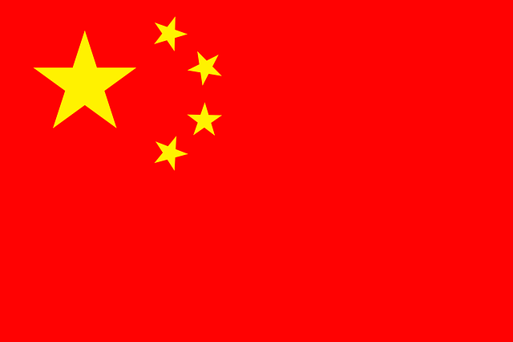

| Name | Flag | Founder |
|---|---|---|
|
INDIA |
The design of the Indian national flag is credited to Pingali Venkayya, an Indian freedom fighter and political activist. He presented his design to Mahatma Gandhi during the meeting of the Indian National Congress in 1921, and it was subsequently adopted as the national flag of India. |
|
|
Pkaistan |
The founder of Pakistan's national flag is Syed Amir-uddin Kedwaii. He designed the flag in 1947, shortly before Pakistan gained independence from British rule. |
|
|
China |
 |
The current flag of China, commonly known as the Five-starred Red Flag, was designed by Zeng Liansong. He created this flag in 1949 under the guidance of the Chinese Communist Party (CCP), which was led by figures such as Mao Zedong during the establishment of the People's Republic of China. |